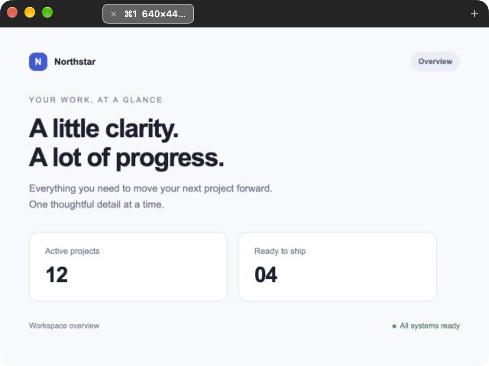
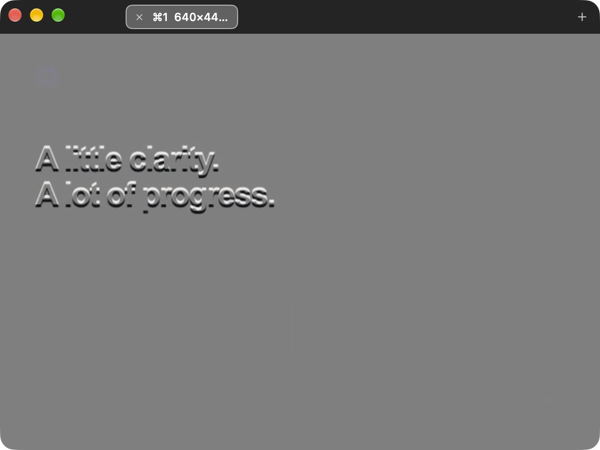

TRACE / WORKFLOW GUIDE
Compare a Figma design with a live website
Compare a Figma design with your implementation using a screenshot overlay on your Mac.
1. Bring your reference into Trace
In Figma, choose the frame or region you want to compare and use its Copy as PNG command. Switch to Trace and press ⌘V. If your tool’s clipboard output is not an image, Trace cannot paste it; use a screenshot instead.
You can also put Trace over a visible design and press ⌘G. Trace captures only the area inside its image viewport, excluding its own windows. This capture route requires Screen Recording permission. Set up capture permission.

2. Match the scale before you align
Set your browser to the viewport width used in your design, then press ⌘0 in Trace for Actual Size. This restores the image’s original logical size. A reference exported at a different scale may still need resizing; Actual Size does not infer your Figma frame size.
Trace’s tab tooltip shows both point and pixel dimensions. On Retina displays, those units differ. Keep browser zoom and reference scale consistent before judging spacing.
3. Position the overlay over your website
Drag Trace until a clear anchor—such as a heading or card corner—lines up. Nudge with the arrow keys for 1-point steps, or Shift plus an arrow for 10-point steps. If you enable Command-modified movement in Preferences, hold Command too.
For a closer look, use Trace’s Zoom In and Zoom Out controls. Return to Actual Size before making your final alignment judgment.
4. Inspect the inverted blend
Turn on inversion with ⌘I and 50% image translucence with ⌘L, if they are not already enabled. Set Window opacity in Preferences to 100%. Matching content blends to neutral gray; displaced edges remain visible.

Start with large layout anchors, then inspect padding, gaps, text wrapping, and alignment. Font rendering, reference export scale, and browser zoom can also cause visible differences. Trace helps you inspect the blend; it does not decide which differences are errors.
5. Refine your build without losing the reference
Lock the overlay with ⌃⌘L to click through to the website underneath, then bring Trace to the front using the Dock or Command-Tab and use the same shortcut to unlock it. Keep other references in tabs with ⌘T and switch with ⌘1–⌘9.
Each tab keeps its own undo history for the current session. Copy an image out if you need to save it elsewhere: screenshots and history are cleared when Trace quits.
Give your next build a closer look.
Free on the Mac App Store. Built for macOS 26 and later.